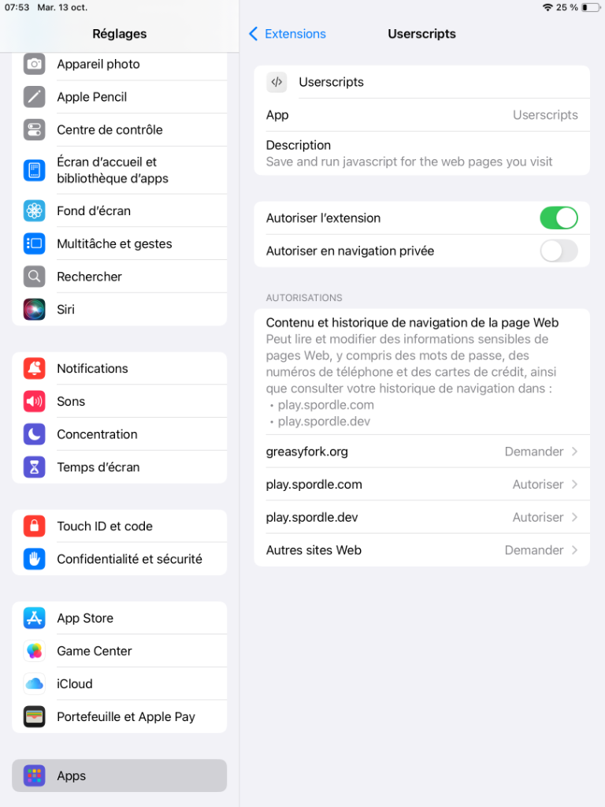
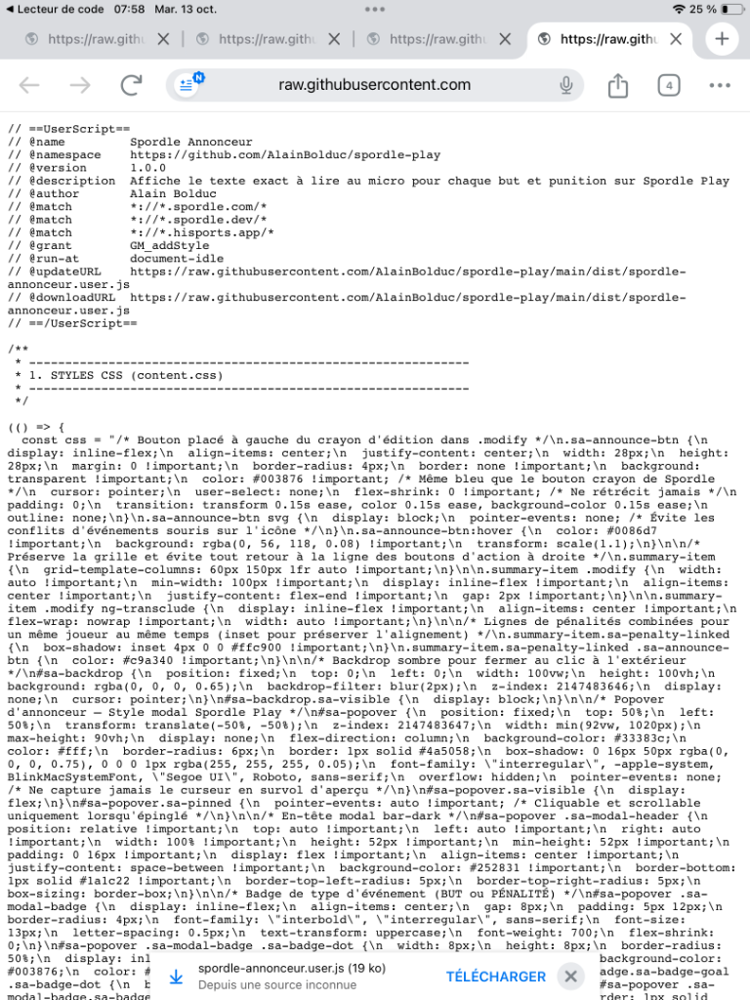
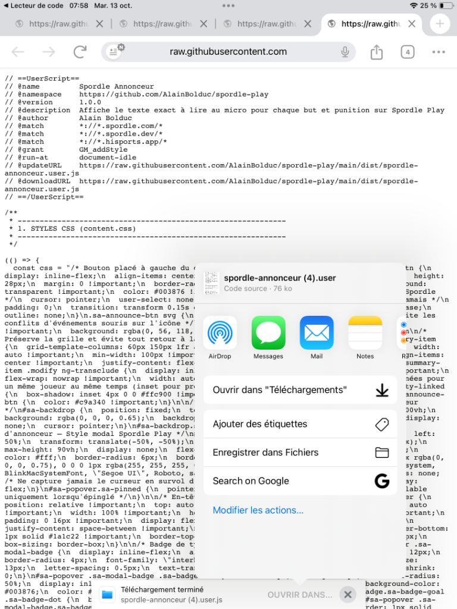
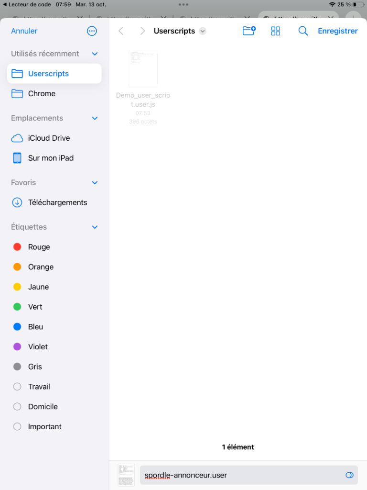
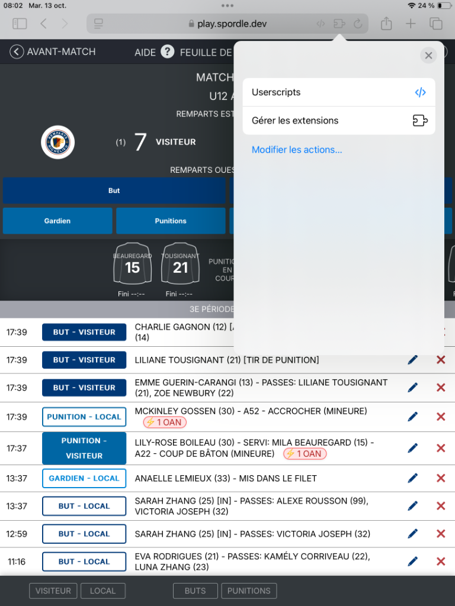
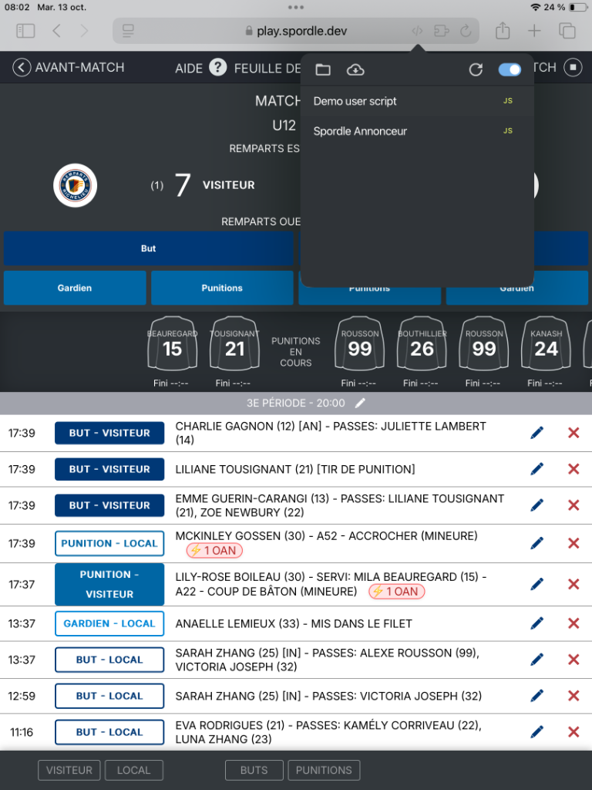
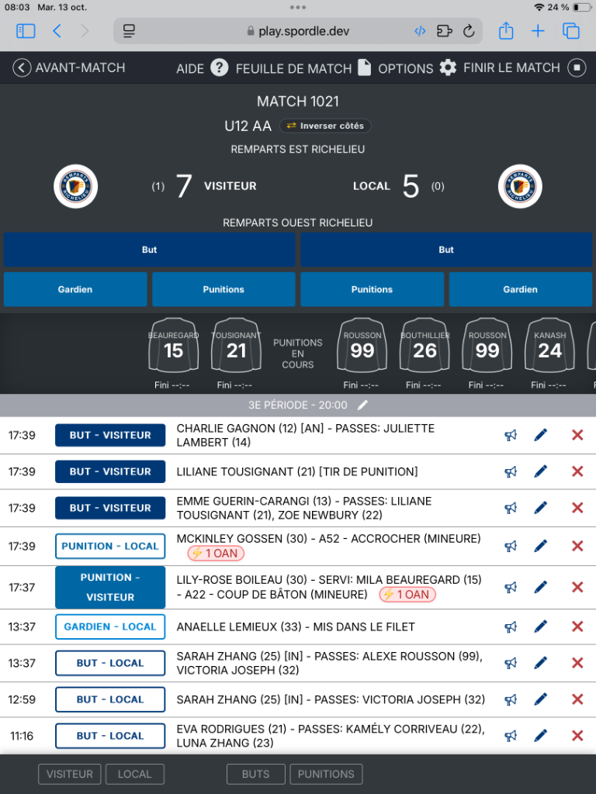

Guide pas à pas pour configurer l'extension sur iPad ou iPhone.
Scannez le code avec l'appareil photo ou touchez directement le bouton ci-dessous dans Safari :
Téléchargez l'application gratuite Userscripts depuis l'App Store. C'est l'extension qui permet à Safari d'exécuter des scripts.
Ouvrir dans l'App Store (apple.co/4hHYsZJ) ↗play.spordle.com) sont bien configurés sur Autoriser.
Par défaut, l'application utilise déjà le dossier Userscripts sur votre appareil. Si vous souhaitez le personnaliser ou le vérifier :
Scannez le code QR ci-dessous avec l'iPad ou ouvrez directement le lien dans Safari :
Touchez le lien ci-dessus ou scannez le code pour lancer le téléchargement.





